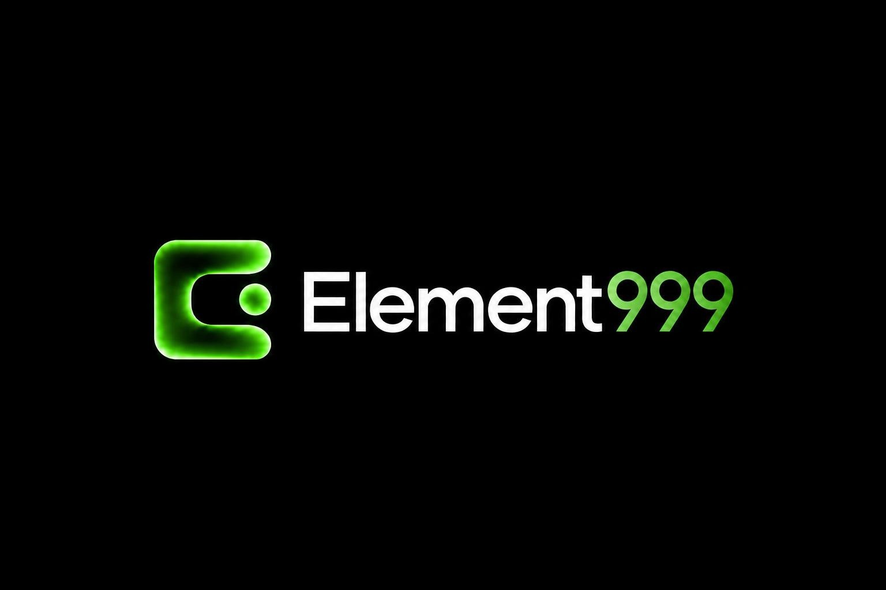
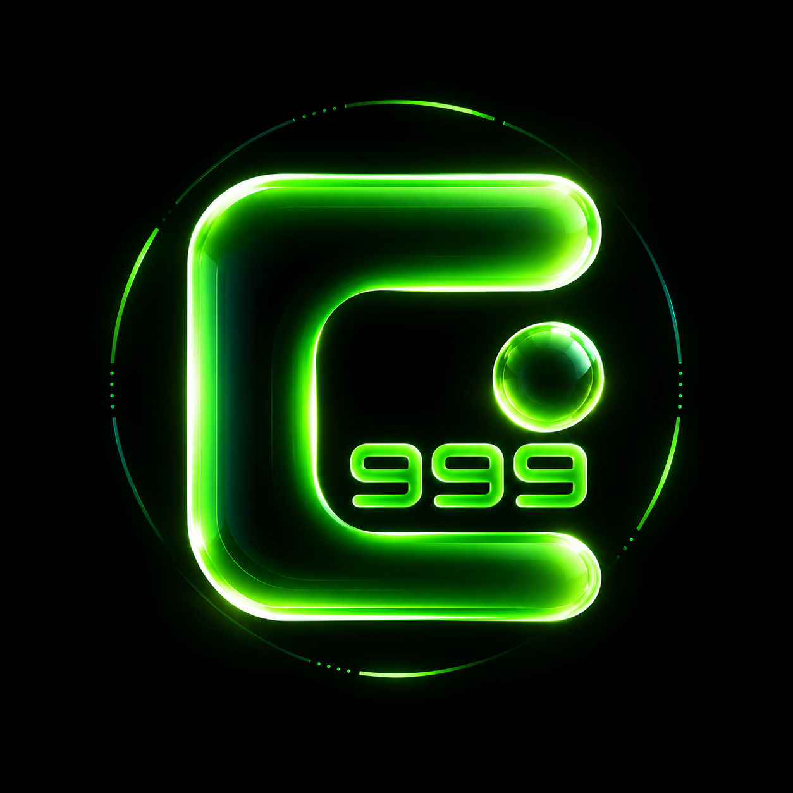

Entender primero.
Identificamos la fricción, el contexto y la oportunidad que merece resolverse.

Encontrar mi elementoINTELIGENCIA ARTIFICIAL APLICADA
Tu próximo avance ya está en tu negocio.
Conectamos el proceso, el dato o la decisión
que lo hace posible.
DIAGNÓSTICO · SOLUCIÓN · IMPACTO MEDIBLE

PROCESO / DATO / DECISIÓNWeb & ecommerce · Agentes de IA · Automatización · Software · Crecimiento
01 / CAPACIDADES
Empezamos por lo que necesita cambiar.
Construimos la solución alrededor.
02 / EL TRABAJO EN CONTEXTO
DEMOSTRACIÓN CONCEPTUALAsí puede conectarse la atención de una tienda con su proceso comercial. Un recorrido de ejemplo para explorar lo que construiríamos.
Explorar la demostraciónEjemplo de diseño. No representa un cliente ni resultados reales.
03 / EL MÉTODO ELEMENT999
La IA es parte del sistema.
El resultado es la razón para construirlo.
Identificamos la fricción, el contexto y la oportunidad que merece resolverse.
Unimos herramientas, datos y procesos alrededor de un alcance definido.
Validamos la entrega y observamos qué mejora y qué necesita evolucionar.
EL SIGUIENTE PASO EMPIEZA CON UNA NECESIDAD.
ELEMENT999 / DIAGNÓSTICO
No hace falta que sepas qué tecnología necesitas. Empecemos por lo que quieres cambiar.
Recorrido guiado de demostración. Sin agente conectado ni envío de datos.
PASO 01 / 03
ELEMENT999 / TU SIGUIENTE ELEMENTO
RESUMEN CONFIRMADO
DEMOSTRACIÓN CONCEPTUAL / ECOMMERCE
Un ejemplo de cómo conectar atención, contexto y seguimiento comercial. Sin atribuir resultados a un cliente real.
La necesidad queda en una conversación y el seguimiento depende de copiar información entre herramientas.
El agente confirma la necesidad y genera una oportunidad estructurada para un CRM autorizado.
Se verifica el registro único, la calidad del resumen y la recuperación ante errores. Los resultados se medirían durante el piloto.
Problema inicial, periodo, intervención, participación del fundador y evidencia del resultado. Los proyectos anteriores a Element999 se identificarán como experiencia del fundador.